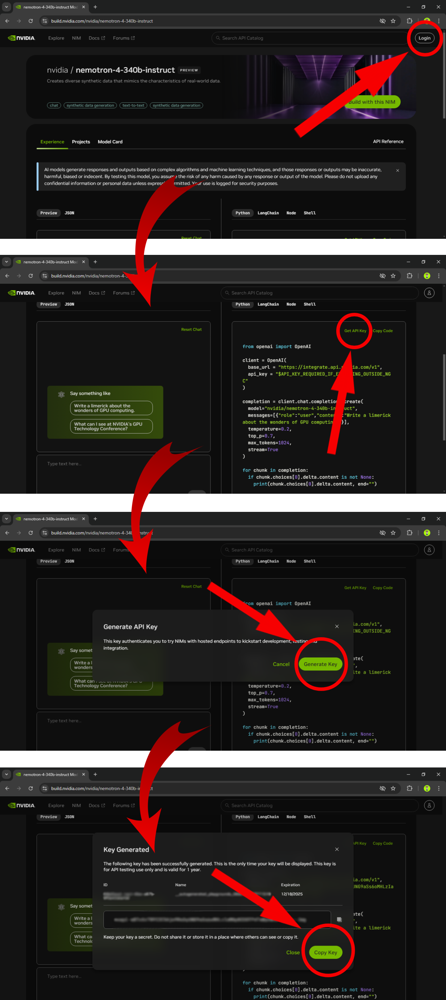
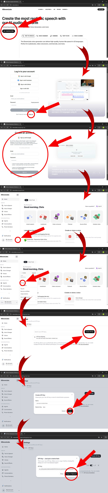
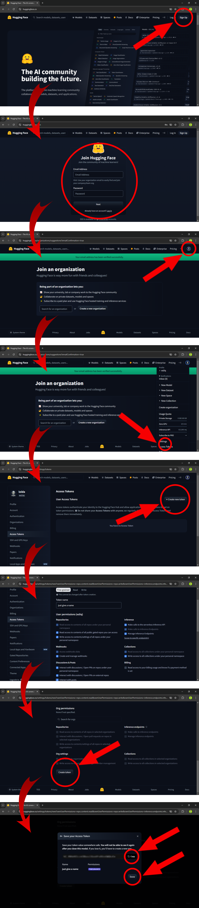

The AI system operates by leveraging three advanced models to generate the final video. The first model, Nemotron 4 340B by Nvidia, is a large language model (LLM) based on the T5 architecture. This model is responsible for generating the script and the image generation prompts. Nemotron runs on Nvidia's server infrastructure, from where it processes the input and produces the necessary outputs for the subsequent steps.
The second model, Flux 1.0 Dev by Black Forest Labs, is an image generation model hosted on Hugging Face's cloud platform. Flux 1.0 Dev takes the prompts generated by Nemotron and produces the corresponding images for the video.
The third model, Eleven Labs Multilingual V2, is used for text-to-speech conversion, transforming the script generated by Nemotron into voice narration. This model operates on Eleven Labs' server infrastructure.
CLICK HERE AND READ THE WARNING BEFORE MOVING FORWARD. To access and utilize these models, individual API keys must be obtained for each service. Additionally, a valid email address is required to receive the generated video, as the model's delivery mechanism is based on email. Please note that any charges associated with API usage are the sole responsibility of the user and are not covered by our service.
To begin, visit the official website of Nvidia's Nemotron 4. Next, register for an account if you haven't already. Once registered, generate an API key and ensure that it is functional and valid. Additionally, verify that your account has available credits, though a free trial will suffice for this purpose. Below is an image representation illustrating the steps for generating the API key:
To obtain your Eleven Labs API key, start by visiting their official website and signing up for an account. Upon registration, you will receive 10,000 credits as part of a free trial. Proceed to generate your API key and copy it for future use. Ensure that the key is not restricted and has full access to the required services. Additionally, regularly check that your credits are not exhausted after several uses. Below is an image representation showing how to generate your Eleven Labs API key:
Begin by visiting Hugging Face's official website and signing up for an account. Once registered, complete the email verification process following their outlined procedures. After your email is verified, navigate to your account settings and select "Access Tokens" from the menu. Generate a new access token (API key) and configure its permissions. Grant the token all permissions except for billing-related ones. Ensure the access token has the necessary permissions to interact with and send requests to AI models. Below is an image representation outlining the steps to generate a Hugging Face API key:
Please note once again that any charges incurred from API key usage are entirely the responsibility of the user and not ours. While the free trial provided by each service will work initially, once those credits are exhausted, you will need to ensure that your account has sufficient credits for continued use. If you attempt to use our AI system with an API key linked to an account that lacks credits, the process will fail, and instead of receiving the generated video, you will receive an error notification via email.
It is crucial to ensure your API keys remain valid and sufficiently funded to avoid any interruptions. Remember, we are not liable for any costs associated with API key usage, including fees incurred from exceeding the free trial limits or maintaining access beyond the trial period.